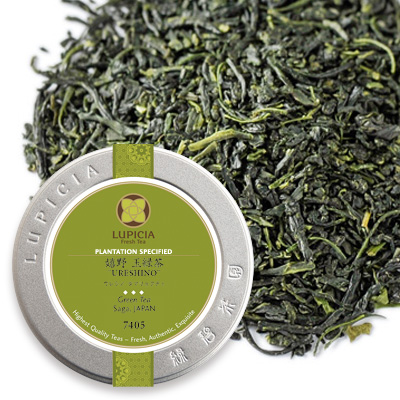

LUPICIA 7405 · g13107405
우레시노 타마료쿠차
嬉野 玉緑茶
ウレシノ タマリョクチャ
아이스티 추천

嬉野 玉緑茶は、釜炒り茶と煎茶の長所を併せ持った蒸し製玉緑茶です。
玉緑茶は釜炒り茶と同様に、煎茶特有の茶葉を細長くまっすぐに整える工程（精揉）が無いため、くりっと丸まった勾玉形の茶葉が特徴です。
釜炒り茶は、生葉を釜で炒って作られるのに対し、蒸し製玉緑茶は、煎茶と同様に蒸気で蒸して作られます。
程良いコクがあり、渋みが少なくまろやかな味わいが魅力です。
深みのある濃緑色の水色が美しく、風味・茶葉の見た目ともに丸みがある印象のお茶です。
【産地情報】
蒸し製玉緑茶は九州北部から中部で作られており、代表的な産地は佐賀県嬉野市です。
主産地である嬉野町は、なだらかな山間で霧深く、昼夜の温度差があり日照量などの条件が茶の栽培に適した産地です。
嬉野温泉とともに、有田焼や伊万里焼などの焼き物も有名です。
15世紀半ばに明（中国）の陶工が焼き物文化とともにお茶の栽培をもたらし、南京釜による炒葉製茶法を伝えたことが、嬉野の釜炒り茶の始まりとされています。
現在では、嬉野茶として生産される玉緑茶のほとんどが蒸し製玉緑茶です。
- 상품번호
- 7405
- 상품 형태
- 50g 캔입
- 가격
- 1,130円
- 원재료
- 緑茶（日本）※商品の改定などにより、商品パッケージの記載内容が上記内容と一部異なる場合がございます。
- 원산지
- 日本※商品の改定などにより、商品パッケージの記載内容が上記内容と一部異なる場合がございます。
- 찻잎
- 4-5g
- 물
- 75-80℃
- 우림 시간
- 1-1.5分
- 우림 횟수
- 1-2回
다른 포장
보관된 상품 정보 갱신일: 2025-07-26